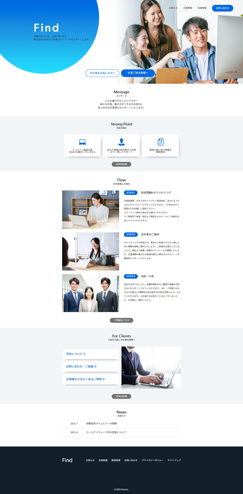

Works

- Overview
- HR Company Website
- Purpose
- Make your services known to job seekers. Increase the number of clients and inquiries.
- Target
-
People looking for a job site to find a new job. Employers who are looking for a place to post their jobs. Job hunters who are interested in the human resources industry.
- Theme Color
- Concept of Design
- I use blue as the main color to give a sense of cleanliness and honesty.I place a button at the top to distinguish between the job seeker page and the client page.
- Planning/Design/Coding
- Tools
- Photoshop/Illustrator
- Production Period
- 4 Days
- URL
- https://waki-h.github.io/find/
